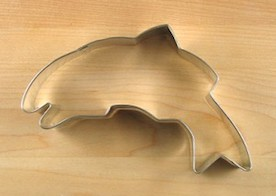

Charity Event
Join us in helping those in need by purchasing a one of a kind cookie-cutter for only $30. The cutters are hand-made by a local artisan and 60% of proceeds go to support Salmon Whisperer, a Portland based, non-profit organization helping those who cannot help themselves by teaching them to fish.
Meet The Owner
Meet Pat. Pat started Cookie Stand in 1998 after waking from a vivid dream in which, he claims, a giant salmon jumped out of the Willamette River into his bike path as he crossed the Hawthorne Bridge on his way to work one morning. His friends called him crazy and abandoned him but Pat will celebrate the 20th anniversary of Cookie Stand this April. 2018 is the year of the Salmon as Pat expands his cookie empire into three other states with locations opening soon in WA, ID, CA.
Our Cookies

Lets face it. When you first hear of a cookie that contains Salmon your first reaction probably isn't going to involve eating a pile of 'em. However, after 20 years in business with over 86,000 cookies sold you can't call our army of loyal cookie afficionados crazy anymore!